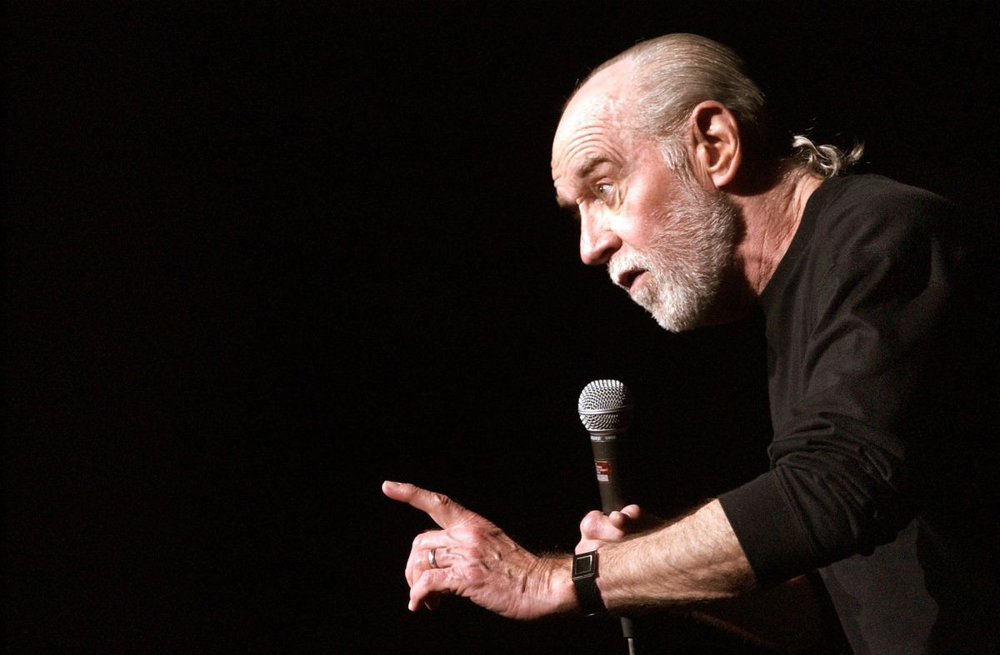

George Carlin seen in his last performance in 2008 before he died.
Timeline:
1937 - Carlin born May 12 in New York, NY.
1954 - Joins US Air Force. Works as off-base disc jockey in Shreveport, LA.
1960 - With Burns, moves to Hollywood, CA, working as comedy duo “Burns & Carlin.”
1962 - Carlin goes solo. First appearance alone on “The Tonight Show.”
1965 - 29 guest appearance on Merv Griffin show.
1967 - “Take-Offs and Put-Ons,” first comedy album, released to rave reviews.
1970 - Reinvents self; begins sporting pony tail, black t-shirt, and jeans. Moves
act to coffee houses and colleges. Reaches younger audience.
1972 - “FM & AM” album released. Two sided, “AM” contained his older, cleaner work.
“FM” contained his newer, more rambunctious style.
1973 - WBAI Pacifica broadcasts Carlin routine “Filthy Words” one early afternoon.
Lawsuit against station ensues after man and his young son hear it on radio.
1989 - Carlin plays major role in “Bill and Ted’s Excellent Adventure,” starring
Keanu Reeves.
1994 - “The George Carlin Show,” in which Carlin plays a lovable but cantankerous
NY taxi driver, runs for one season.
2008 - Last HBO special, “It’s Bad For Ya,” is recorded and released. George Carlin
dies at age 71.
2014 - Harlem city block where Carlin grew up is re-named in his honor.